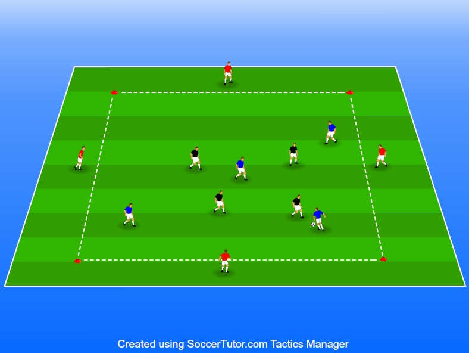

Högt bolltempo samt att kunna förbättra sin speluppfattning och mottagningsförmåga i rörelse
1 boll
12 spelare (3 lag, använd
Ställ upp en kvadrat
4v4 eller 3v3 spelar mot varandra inne i kvadraten med 1 spelare • Ställ upp en kvadrat på runt 20-25m som agerar vägg på varje sida
Målet är att hålla bollen inom laget
Väggarna är alltid med bollhållande lag det betyder att om röd spelare passar till en av de gula spelarna ska de fördela tillbaka bollen till någon av de röda spelarna
Byte av väggarna sker i 2 minuters intervaller och då byter man bara hela röda laget eller blåa laget mot gula laget. Det betyder att varje lag är inne i kvadraten i 4 minuter
Se till som ledare att vara tydlig med att använda hela spelplanen
När man inte är bollhållande lag ska man kommunicera och vinna bollen tillbaka tillsammans
Väggarna ska vara lika aktiva när det kommer till kommunikation som spelarna inne på planen
Högt bolltempo är det slutliga målet så sätt krav på antal touch på väggar. Om spelarna klarar av även detta så kan ni som ledare höja kraven återigen genom att väggarna aldrig får passa tillbaka till samma spelare utan alltid måste hitta en ny.